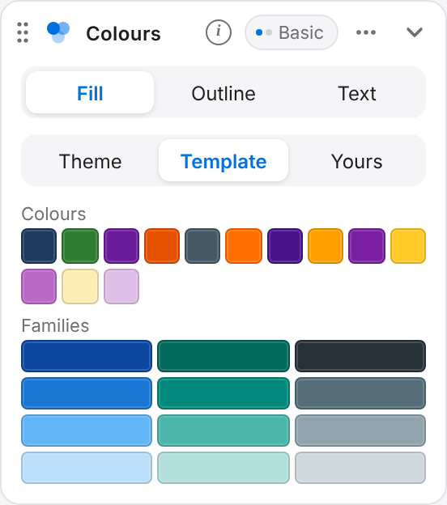

Colours
Apply theme, template and your own colours with one click.
Overview
Colours applies exact theme, template and your own colours to shape fills, outlines and text with one click.
Quick start
- Choose Fill, Outline or Text.
- Select shapes or text.
- Click a swatch.
The panel, control by control
| # | Control | What it does | Values and default | Notes |
|---|---|---|---|---|
| 1 | Fill, Outline, Text Basic | What a swatch click colours: the shape fill, the shape outline, or the selected text. | Default Fill | Remembered on this computer. |
| 2 | Theme, Template, Yours Basic | Which colours are shown. Tabs for colours the presentation doesn't have are hidden. | Default Theme | The last tab used is remembered. |
| 3 | Theme colours Basic | The presentation's ten theme colours in PowerPoint's order: Background 1, Text 1, Background 2, Text 2, Accent 1 to 6. | None | Hover a swatch for its name and hex code. |
| 4 | Tints and shades Basic | Five lighter or darker versions of each theme colour, the same as PowerPoint's colour menu, named like "Accent 1, Lighter 40%". | None | None |
The Template tab
Shows the custom colours saved in the template's theme (PowerPoint's Custom Colors). Single colours are in one row. A colour that comes with its own tints in a column is shown as a family, one column each.

The Yours tab
| # | Control | What it does | Values and default | Notes |
|---|---|---|---|---|
| 1 | Your colours Basic | Your own palette, saved in the presentation. Click to apply. | None | None |
| 2 | Hex code and picker Basic | A colour to add, typed as hex or chosen with the picker. | #RRGGBB or a colour name | None |
| 3 | Add Basic | Adds the colour to your palette. | None | Duplicates are refused. |
| 4 | Add from selection Basic | Adds the selected shape's fill, or the selected text's colour, to your palette. | None | Hidden style codes are removed from text colours. |
| 5 | Edit your colours More | Rename each colour, move it up or down, or remove it. | None | None |
How it works
Tints and shades
Worked out the same way as PowerPoint: the colour's lightness is moved towards white (Lighter) or black (Darker) by set steps. Most colours get Lighter 80, 60 and 40%, and Darker 25 and 50%. White, black, very dark and very light colours get their own ladders, as in PowerPoint.
Template colours
Read from a copy of the first slide's theme. PowerPoint stores custom colours in rows of ten, with empty slots as white. A column counts as a family when it is full and every colour shares the same hue. Empty white slots are left out.
Text and styles
Colouring styled text from here keeps it linked to its text style, recording the new colour as a local change. The ribbon's font colour button breaks the link.
Recipes
Build a brand palette
Your brand colours one click away in every deck you share.
- Open the Yours tab.
- Type each brand colour's hex code and click Add.
- At More, name each colour. The palette is saved in the presentation.
Recolour headings without breaking styles
Change heading colours and keep them linked.
- Select the headings.
- Choose Text.
- Click the colour.
Limits and edge cases
- Theme and template colours are read only. They belong to the slide master.
- Colours are applied as fixed colours, not as theme references.
- Template colours need PowerPoint API 1.8.
Related tools
- Styles and Shape styles suggest these colours in their colour pickers.